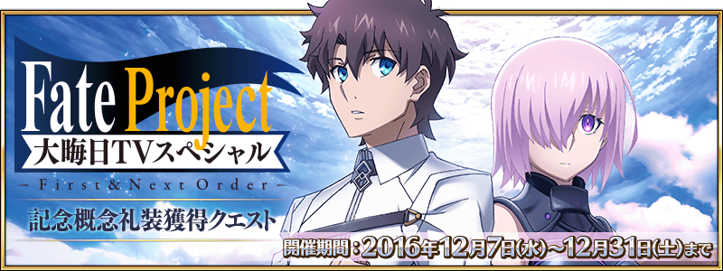

◆活動舉辦期間◆
2016年12月6日(二) 23:00～12月31日(六) 22:59
◆活動概要◆
自2016年12月31日(六) 21:00播送「Fate Project 除夕TV Special ～First & Next Order～」。
為了記念，舉辦使用在節目內播送的長篇TV特別動畫「Fate/Grand Order ‐ First Order ‐」的主視覺圖做記念概念禮裝的獲得關卡。
挑戰在迦勒底之門出現的關卡，取得除夕TV特別記念概念禮裝吧！
【「Fate Project 除夕TV Special～First & Next Order～」概要】
■放送時間：2016年12月31日(六) 21:00～23:00
■放送局：在TOKYO MX・群馬テレビ・とちぎテレビ・BS11全國同時放送
■配信：niconico ※與TV放送同時配信
|
★★★★SR |